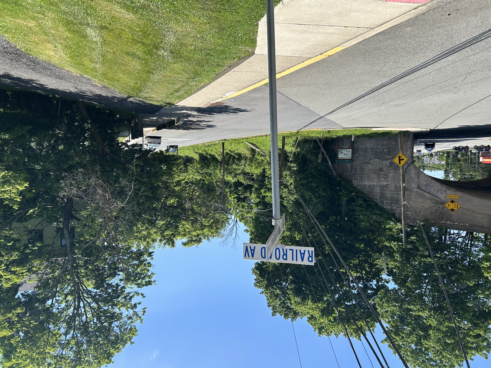
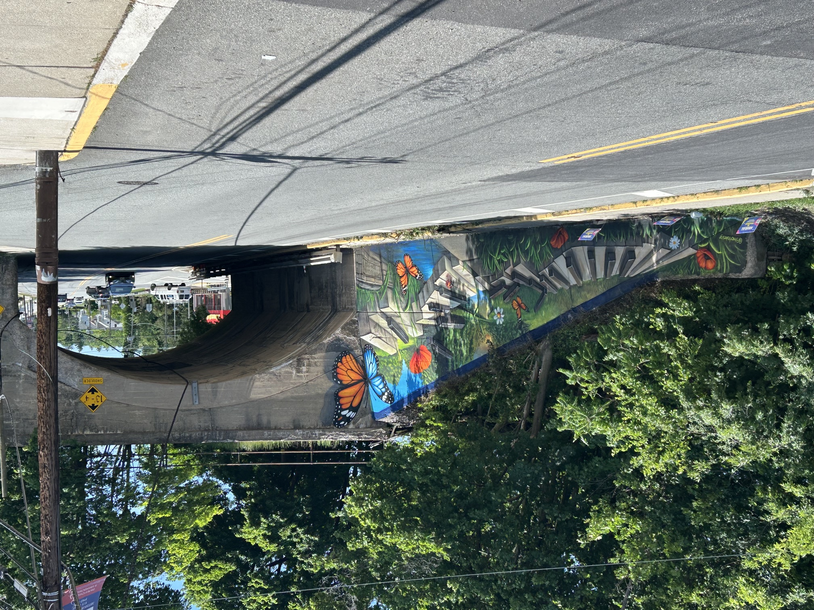
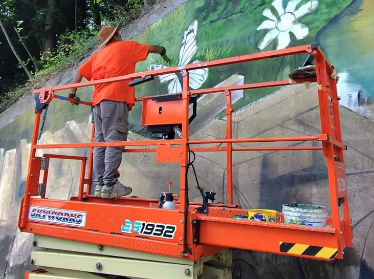

This beautiful mural started in late May 2026 and ended in early June 2026. It took a week to make from start to finish. What a talented painter. This mural was created by Conscious Community Creations, Inc. (FYI: I am just an experienced graphic artist, TOTALLY INDEPENDENT, learning web design and I wanted to highlight here the beautiful work done in my town with this attractive mural. I really appreciate the beauty!)
Washington NJ (in the present 07882 Zip Code) was settled in 1811 when Colonel William McCullough built a brick Washington Tavern at the intersection of present day Washington and Belvidere Avenue. (PICTURED HERE) The town would rapidly grow and develop with the advent of new types of transportation. From it's earliest beginnings as a stage coach stop on the Spruce Run and Morris Turnpikes, Washington would evolve into a manufacturing power-house with the completion of the Morris Canal (see mural) and then the arrival of the two railroads. This transportation system helped to ship thousands of Washington made organs and pianos all over the world. Transportation has played an important role changing the face of Washington for the past 200 years.


It's amazing for me to think that the present day spot (now in 2026) is the same spot as a railroad station stop shown many, many, many years ago. The sign that's circled in red (in the picture here) has a ton of interesting facts about this beautiful area named Washington, NJ 07882. Just to add: A major train stop was right here above this underpass back in those days. I am sure those organs and pianos were loaded onto the trains right here by Railroad Ave. from nearby factories which helped the current economy of those days and gave this area life. It was called the Rt 57 Lackawanna Underpass.



A MURAL is any piece of artwork painted or applied directly to a wall, ceiling, or other permanent surface. Derived from the Latin word murus (meaning "wall"), murals range from ancient cave paintings to modern urban street art, and are often designed to reflect community values or historical events. (from internet)